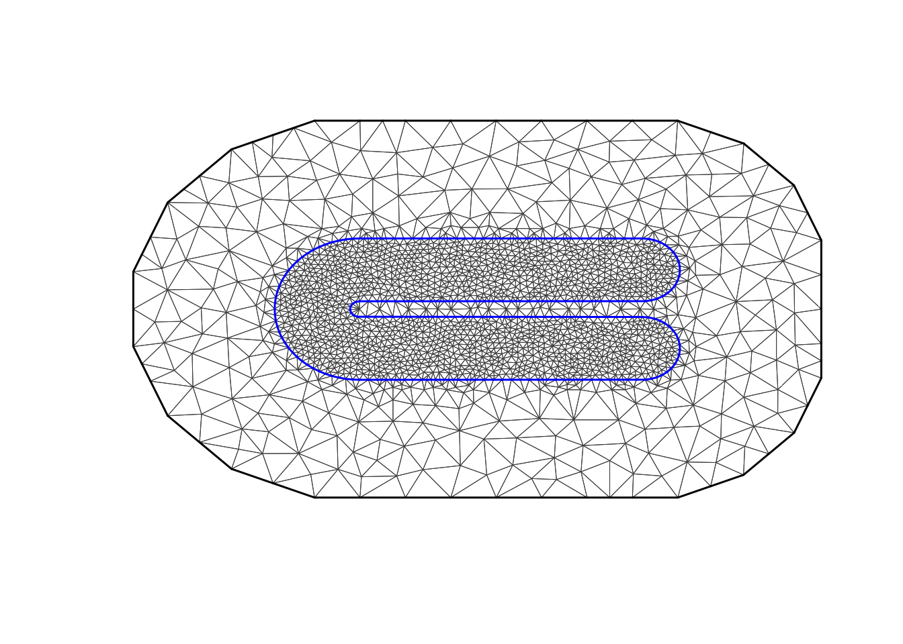
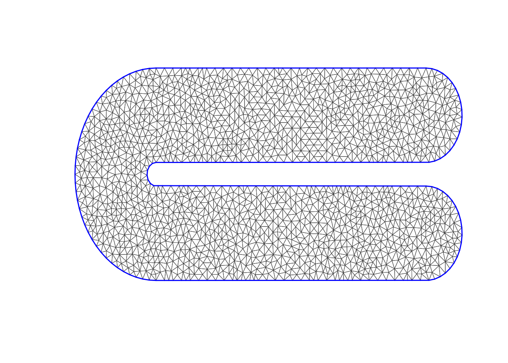

Bulge in Ramsay’s horseshoe and the Barrier model
Haakon Bakka
BTopic111 updated 6. April 2017
0.1 About
Plan: Do not use this topic, ever. Reason: This adds more “stuff” than it increases our understanding! Tradeoff not worth it.
In this topic we use Ramsay’s horseshoe to compare the Barrier model to other solutions of the barrier problem. The previous topic is very similar to this one!
0.2 0. Initialisation
We load the libraries and functions we need. You may need to install these libraries (Installation and general troubleshooting). Feel free to save the web location where the functions are defined as an R-file on your computer. We also set random seeds to be used later.
library(INLA)
library(mgcv)
#source('https://haakonbakka.bitbucket.io/functions-barriers-dt-models-march2017.R')
# - if you have an internet connection
source('functions-barriers-dt-models-march2017.R')
# - if you have saved the file locally
set.seed(2016)
set.inla.seed = 20160.3 Input
N.loc = 100
# - number of locations
# - 100 in the soap-film paper (Wood)
sigma.eps = 0.05
# - measurement noise
# - Wood uses 0.05 (when do.increase = F)
global.zlim = c(-0.3, 1.1)0.4 1. Code from the mgcv library ?fs.test
The code has been edited to include b = 0, to rescale the values, and to make the plot of the same type as the inference results.
## plot the function, and its boundary...
fsb <- fs.boundary()
m<-300;n<-150
xm <- seq(-1,4,length=m);yn<-seq(-1,1,length=n)
xx <- rep(xm,n);yy<-rep(yn,rep(m,n))
tru = fs.test(xx,yy, b = 0)
tru = 6*tru
# - rescale to get values between 0 and 1
tru.matrix <- matrix(tru,m,n) ## truth
image.plot(xm,yn,tru.matrix,xlab="x",ylab="y", zlim=global.zlim, asp=1)
lines(fsb$x,fsb$y,lwd=3)
contour(xm,yn,tru.matrix,levels=seq(global.zlim[1], global.zlim[2],len=10),add=TRUE, col="white", drawlabels = F)range(tru, na.rm = T)## [1] 1.7e-08 9.6e-010.5 2. Data
dat = data.frame(y = tru, locx = xx, locy=yy)
dat = dat[!is.na(dat$y), ]
df = dat[sample(1:nrow(dat), size=N.loc) ,]
df$y = df$y + rnorm(N.loc)*sigma.eps
str(df)## 'data.frame': 100 obs. of 3 variables:
## $ y : num 0.3653 0.1106 -0.0807 0.1466 -0.0377 ...
## $ locx: num 1.726 2.863 2.194 1.007 0.087 ...
## $ locy: num -0.235 -0.369 0.49 -0.396 -0.436 ...summary(df)## y locx locy
## Min. :-0.09 Min. :-0.8 Min. :-0.89
## 1st Qu.: 0.09 1st Qu.: 0.5 1st Qu.:-0.42
## Median : 0.18 Median : 1.5 Median :-0.16
## Mean : 0.30 Mean : 1.4 Mean : 0.00
## 3rd Qu.: 0.48 3rd Qu.: 2.5 3rd Qu.: 0.53
## Max. : 1.05 Max. : 3.4 Max. : 0.880.6 3. Polygons and the Mesh
p = Polygon(cbind(fsb$x, fsb$y))
p = Polygons(list(p), ID = "none")
poly = SpatialPolygons(list(p))
plot(poly)
points(df$locx, df$locy)
axis(1); axis(2)
max.edge = 0.1
bound.outer = 1.5
mesh = inla.mesh.2d(boundary = poly,
loc=cbind(df$locx, df$locy),
max.edge = c(1,5)*max.edge,
#cutoff = 0.1,
cutoff = 0.04,
# 0.1 is fast and bad, 0.04 ok?
offset = c(max.edge, bound.outer))
plot(mesh, main="Our mesh", lwd=0.5)
mesh$n## [1] 21160.7 4. Stack and A matrix
A.i.s = inla.spde.make.A(mesh, loc=cbind(df$locx, df$locy))
stk = inla.stack(data=list(y=df$y),
effects=list(s=1:mesh$n,
m = rep(1, nrow(df))),
A=list(A.i.s, 1),
remove.unused = FALSE, tag='est') 0.8 5. Stationary model
To set up the stationary spatial model, we first define the spatial Model Component.
prior.range = c(1, .5)
prior.sigma = c(3, 0.01)
spde = inla.spde2.pcmatern(mesh, prior.range=prior.range, prior.sigma=prior.sigma)
# - We put the prior median at approximately 0.5*diff(range(df$locy))
# - - this is roughly the extent of our study area
# - The prior probability of marginal standard deviation 3 or more is 0.01.Then we define the formula.
M = list()
M[[1]] = list(shortname="stationary-model")
M[[1]]$formula = y~ -1+m + f(s, model=spde)0.9 6. Barrier models
First we divide up the mesh accoring to our study area polygon.
mesh = dt.mesh.addon.posTri(mesh)
# - compute the triangle positions
normal = over(poly, SpatialPoints(mesh$posTri), returnList=T)
# - checking which mesh triangles are inside the normal area
normal = unlist(normal)
Omega = dt.Omega(list(normal, 1:mesh$t), mesh)
Omega.SP = dt.polygon.omega(mesh, Omega)## Warning in RGEOSUnaryPredFunc(spgeom, byid, "rgeos_isvalid"): Self-
## intersection at or near point -0.90000000000000002 0## mesh.polys is invalid## Warning in gUnaryUnion(mesh.polys): Invalid objects found; consider using
## set_RGEOS_CheckValidity(2L)## Warning in RGEOSUnaryPredFunc(spgeom, byid, "rgeos_isvalid"): Self-
## intersection at or near point -2.3999999999999999 -0.47688736999999998## mesh.polys is invalid## Warning in gUnaryUnion(mesh.polys): Invalid objects found; consider using
## set_RGEOS_CheckValidity(2L)plot(Omega.SP[[2]], col="grey", main="The barrier region (in grey)")Q.barrier = dt.create.Q(mesh, Omega,
fixed.ranges = c(NA, 0.5))
# - We fix the barrier range to a different value than we
# used for simulations
# - - Why? It does not matter, as long as it is 'small'
# the models are very
# similar
# - - This shows that you do not need to know the
# true 'barrier range'!
# - time: Ca 1 min
log.prior = dt.create.prior.log.exp(
prior.param = c(-log(prior.sigma[2])/prior.sigma[1], -log(prior.range[2])/prior.range[1]))
#c(-log(0.01)/3, -log(0.5)*6))
# - The prior parameters are the lambdas in the exponential
# priors for standard deviation and inverse-range
# - the first is log(prob)/exceed, the second log(prob)*exceed
# - the second is exponential for inverse range, therefore multiplication!
barrier.model = dt.inla.model(
Q = Q.barrier, log.prior=log.prior)M[[2]] = list(shortname="barrier-model")
M[[2]]$formula = y~ -1+m + f(s, model=barrier.model)0.10 7. Stationary model where the mesh stops at the boundary
This is similar to FELSPLINE, as it uses the Neumann boundary condition!
mesh2 = inla.mesh.2d(boundary=poly,
max.edge = max.edge,
#cutoff = 0.1,
cutoff = 0.04)
plot(mesh2, main="The second mesh", lwd=0.5)
mesh2$n## [1] 16970.10.1 This Stack and A matrix
A.i.s2 = inla.spde.make.A(mesh2, loc=cbind(df$locx, df$locy))
stk2 = inla.stack(data=list(y=df$y),
effects=list(s=1:mesh2$n,
m = rep(1, nrow(df))),
A=list(A.i.s2, 1),
remove.unused = FALSE, tag='est') 0.10.2 This model
To set up the stationary spatial model, we first define the spatial Model Component.
spde2 = inla.spde2.pcmatern(mesh2, prior.range=prior.range, prior.sigma=prior.sigma)Then we define the formula.
M[[3]] = list(shortname="neumann-model")
M[[3]]$formula = y~ -1+m + f(s, model=spde2)
M[[3]]$stack = stk20.11 8. Running all the models
Set up the initial values.
## Initial values
# - speeds up computations
# - improves accuracy of computations
# - set these to NULL the first time you run a model
M[[1]]$init = c(7.142,0.314,-0.648)
M[[2]]$init = c(6.986,-1.135,-0.603)
M[[3]]$init = c(7.221,-0.953,-1.383)Next, we run the inference for the our models. Note that this can take up to 30 minutes!
hyper.iid = list(prec = list(prior = 'pc.prec', param = prior.sigma))
# - have the same prior for noise sigma and spatial field sigma
start.time <- Sys.time()
for (i in 1:length(M)){
print(paste("Running: ", M[[i]]$shortname))
stack = stk
if (!is.null(M[[i]]$stack)) stack = M[[i]]$stack
M[[i]]$res = inla(M[[i]]$formula,
data=inla.stack.data(stack),
control.predictor=list(A=inla.stack.A(stack)),
family="gaussian",
control.family = list(hyper = hyper.iid),
#control.family = list(hyper = hyper.fixed),
control.inla= list(int.strategy = "eb"),
#verbose=T,
control.mode=list(restart=T, theta=M[[i]]$init))
}## [1] "Running: stationary-model"
## [1] "Running: barrier-model"
## [1] "Running: neumann-model"end.time <- Sys.time()
time.taken <- end.time - start.time
# - time: ??The initial values that we set M[[i]]$init:
for (i in 1:length(M)){
print(paste(round(M[[i]]$res$internal.summary.hyperpar$mode, 3), collapse = ','))
}## [1] "6.406,0.46,-0.499"
## [1] "6.37,-1.121,-0.671"
## [1] "6.175,-1.031,-1.363"0.12 9. Summaries
print(M[[1]]$shortname)## [1] "stationary-model"summary(M[[1]]$res)##
## Call:
## c("inla(formula = M[[i]]$formula, family = \"gaussian\", data =
## inla.stack.data(stack), ", " control.predictor = list(A =
## inla.stack.A(stack)), control.family = list(hyper = hyper.iid), ",
## " control.inla = list(int.strategy = \"eb\"), control.mode =
## list(restart = T, ", " theta = M[[i]]$init))")
## Time used:
## Pre = 2.26, Running = 4.01, Post = 0.245, Total = 6.51
## Fixed effects:
## mean sd 0.025quant 0.5quant 0.97quant mode kld
## m 0.74 0.26 0.22 0.74 1.2 0.74 0
##
## Random effects:
## Name Model
## s SPDE2 model
##
## Model hyperparameters:
## mean sd 0.025quant
## Precision for the Gaussian observations 755.634 481.793 215.469
## Range for s 1.962 0.787 0.977
## Stdev for s 0.715 0.229 0.409
## 0.5quant 0.97quant mode
## Precision for the Gaussian observations 632.997 1919.19 455.972
## Range for s 1.775 3.86 1.469
## Stdev for s 0.666 1.26 0.576
##
## Expected number of effective parameters(stdev): 89.81(0.00)
## Number of equivalent replicates : 1.11
##
## Marginal log-Likelihood: -1.92print(M[[2]]$shortname)## [1] "barrier-model"summary(M[[2]]$res)##
## Call:
## c("inla(formula = M[[i]]$formula, family = \"gaussian\", data =
## inla.stack.data(stack), ", " control.predictor = list(A =
## inla.stack.A(stack)), control.family = list(hyper = hyper.iid), ",
## " control.inla = list(int.strategy = \"eb\"), control.mode =
## list(restart = T, ", " theta = M[[i]]$init))")
## Time used:
## Pre = 1.71, Running = 14.1, Post = 0.265, Total = 16.1
## Fixed effects:
## mean sd 0.025quant 0.5quant 0.97quant mode kld
## m 0.42 0.071 0.28 0.42 0.56 0.42 0
##
## Random effects:
## Name Model
## s RGeneric2
##
## Model hyperparameters:
## mean sd 0.025quant
## Precision for the Gaussian observations 889.980 845.060 157.55
## Theta1 for s -1.108 0.122 -1.34
## Theta2 for s -0.649 0.198 -1.03
## 0.5quant 0.97quant mode
## Precision for the Gaussian observations 641.947 2910.636 367.393
## Theta1 for s -1.111 -0.873 -1.121
## Theta2 for s -0.654 -0.266 -0.671
##
## Expected number of effective parameters(stdev): 92.50(0.00)
## Number of equivalent replicates : 1.08
##
## Marginal log-Likelihood: -6.290.12.1 Logfiles
To understand how well the computations of the posterior worked, we can look at the logfiles.
#M[[i]]$res$logfile0.13 10. Plot posterior spatial fields
local.plot.field = function(field, mesh, xlim, ylim, zlim, n.contours=10, ...){
stopifnot(length(field) == mesh$n)
# - error when using the wrong mesh
if (missing(xlim)) xlim = poly@bbox[1, ]
if (missing(ylim)) ylim = poly@bbox[2, ]
# - choose plotting region to be the same as the study area polygon
proj = inla.mesh.projector(mesh, xlim = xlim,
ylim = ylim, dims=c(300, 300))
# - Can project from the mesh onto a 300x300 grid
# for plots
field.proj = inla.mesh.project(proj, field)
# - Do the projection
if (missing(zlim)) zlim = range(field.proj)
image.plot(list(x = proj$x, y=proj$y, z = field.proj),
xlim = xlim, ylim = ylim, asp=1, ...)
contour(x = proj$x, y=proj$y, z = field.proj,levels=seq(zlim[1], zlim[2],length.out = n.contours),add=TRUE, drawlabels=F, col="white")
# - without contours it is very very hard to see what are equidistant values
}for (i in 1:3) {
field = M[[i]]$res$summary.random$s$mean + M[[i]]$res$summary.fixed['m', 'mean']
if (i %in% c(1,2)) {
local.plot.field(field, mesh, main=paste(), zlim=global.zlim)
} else {
local.plot.field(field, mesh2, zlim=global.zlim)
}
plot(Omega.SP[[2]], add=T, border="black", col="white")
points(df$locx, df$locy)
}0.14 11. RMSE comparison
## Truth on the grid
summary(dat)## y locx locy
## Min. :0.00 Min. :-0.9 Min. :-0.89
## 1st Qu.:0.06 1st Qu.: 0.2 1st Qu.:-0.48
## Median :0.24 Median : 1.3 Median : 0.00
## Mean :0.32 Mean : 1.3 Mean : 0.00
## 3rd Qu.:0.54 3rd Qu.: 2.3 3rd Qu.: 0.48
## Max. :0.96 Max. : 3.4 Max. : 0.89## Remember
# M[[1]] is the stationary, M[[2]] is the barrier model
A.grid = inla.spde.make.A(mesh, loc=cbind(dat$locx, dat$locy))
for (i in 1:3) {
if (i==3) {
## Different mesh for neumann model
A.grid = inla.spde.make.A(mesh2, loc=cbind(dat$locx, dat$locy))
}
M[[i]]$est = drop(A.grid %*% M[[i]]$res$summary.random$s$mean) +
M[[i]]$res$summary.fixed["m", "mean"]
M[[i]]$rmse = sqrt(mean((M[[i]]$est-dat$y)^2))
M[[i]]$mae = mean(abs(M[[i]]$est-dat$y))
M[[i]]$mae.sd = sd(abs(M[[i]]$est-dat$y))/sqrt(length(M[[i]]$est))
}
## Display results
data.frame(name=unlist(lapply(M, function(x) c(x$shortname))),
rmse=unlist(lapply(M, function(x) c(x$rmse))),
mae=unlist(lapply(M, function(x) c(x$mae))),
mae.sd=unlist(lapply(M, function(x) c(x$mae.sd))))## name rmse mae mae.sd
## 1 stationary-model 0.14 0.10 0.00057
## 2 barrier-model 0.17 0.13 0.00068
## 3 neumann-model 0.21 0.15 0.00087
0.15 Comments and additional
0.15.1 Related topics
BTopic107 is relevant to the current topic.
BTopic110 is a very similar example, just with a different “true” function.